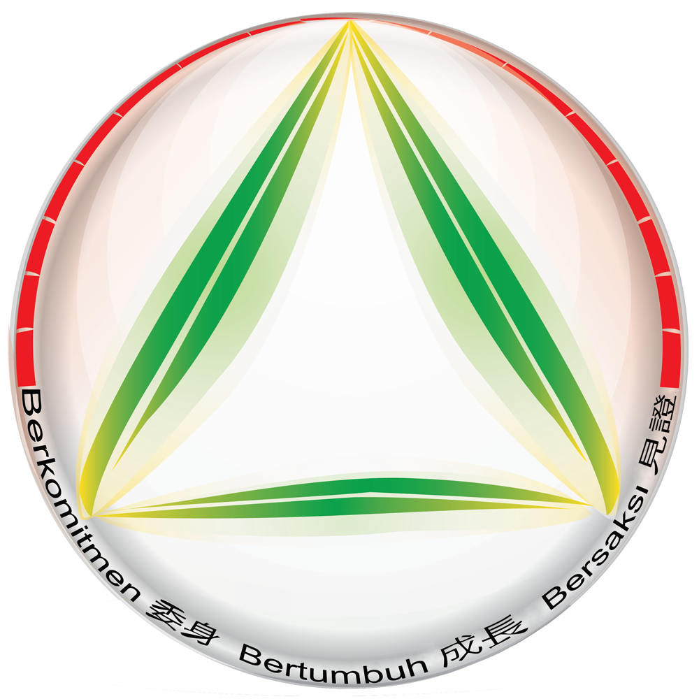

GKKB Pontianak
Gereja yang diperbarui,berpusat pada Alkitab
GKKB Jemaat Pontianak · 西加基督教會坤甸堂會 · melayani sejak 6 Juni 1935
Tonton Ibadah OnlineBaca renungan minggu ini
Berkomitmen
Murid Kristus yang setia
Bertumbuh
Berakar dalam Firman Tuhan
Bersaksi
Bagi Pontianak dan sekitarnya